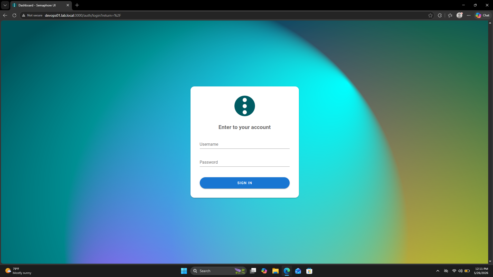
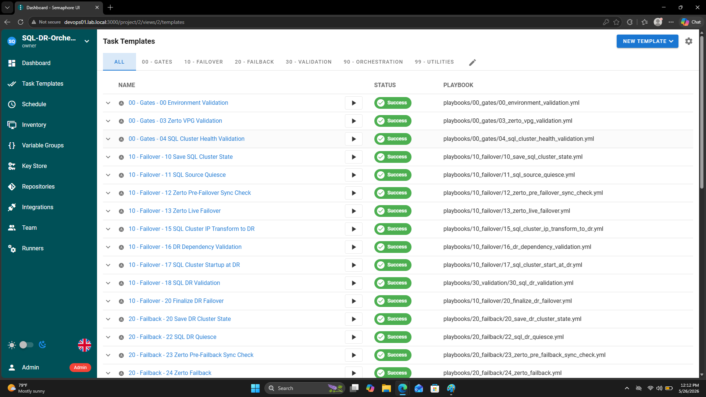
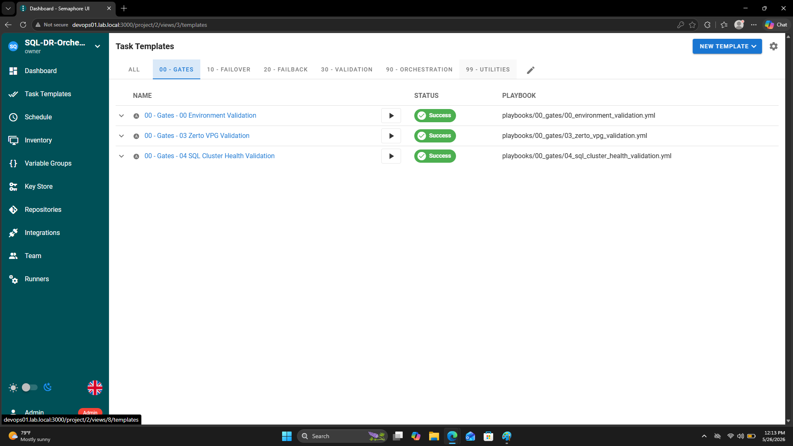
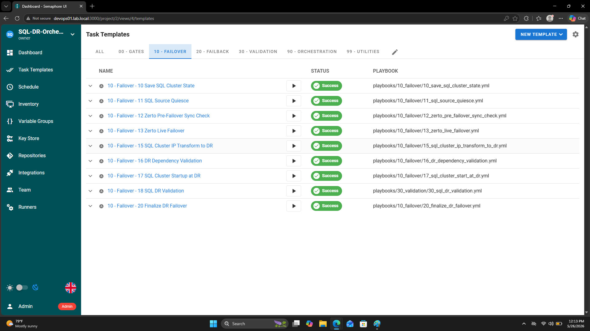
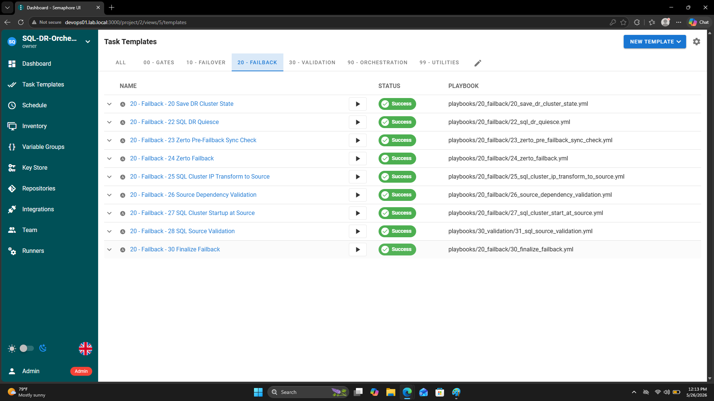
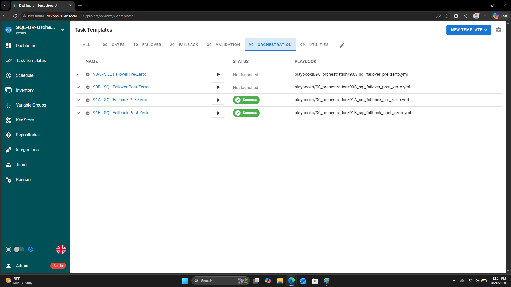
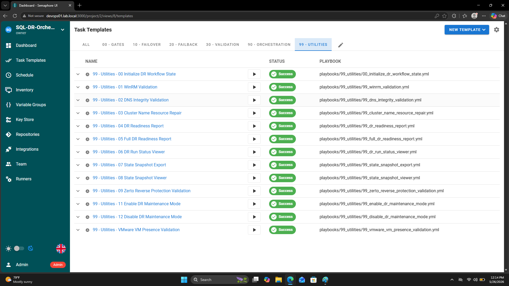

Automate your disaster recovery operations with powerful Ansible playbooks orchestrated through Semaphore UI
This project automates Zerto operations using Ansible playbooks, orchestrated through Semaphore UI. It provides a modular, repeatable, and UI-driven workflow for disaster recovery automation.
Whether you need to perform failovers, failbacks, or regular VPG status checks, this automation framework makes it simple, reliable, and repeatable.
Orchestrate DR operations automatically with reliable, repeatable workflows
Modular, reusable playbooks for flexible automation
Visual pipeline management and real-time monitoring
Direct API integration with Zerto for reliability
Reusable roles and playbooks for flexibility
Track automation execution and results in Semaphore UI
Comprehensive logging and error recovery
Secure handling of API credentials and secrets
Edit inventory/hosts with your Zerto servers and update group variables in inventory/group_vars/
Log into your Semaphore UI instance and import playbooks from the /playbooks/ directory
Check the status of all Virtual Protection Groups (VPGs):
Initiate a failover for specified VPGs:
Execute a failback operation:
http://your-semaphore-instance:3000The system consists of three main components working together:
Provides web interface for pipeline management and monitoring
Executes playbooks and orchestrates operations
Manages virtual protection groups and DR operations
Here's a look at the Semaphore UI configuration with your Ansible playbook templates:

Secure login to Semaphore UI dashboard

All Playbooks

Gates Playbooks

Complete failover automation workflows

Complete Failback automation workflows

Orchestration Playbooks

Monitoring, validation, and utility tasks
Contributions are welcome! Here's how you can help:
git checkout -b feature/your-feature-namegit commit -m "Add: description"git push origin feature/your-feature-name